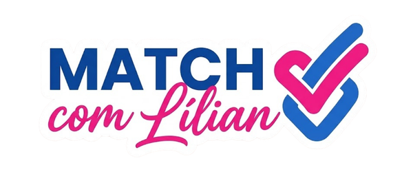

11 perguntas, 11 compromissos
Suas prioridades combinam com as propostas de Lílian?
Não há resposta certa ou errada. A ideia é comparar prioridades.
fim do match
Esse quiz é um convite para somar suas ideias às nossas propostas!

11 perguntas, 11 compromissos
Não há resposta certa ou errada. A ideia é comparar prioridades.
fim do match
Esse quiz é um convite para somar suas ideias às nossas propostas!